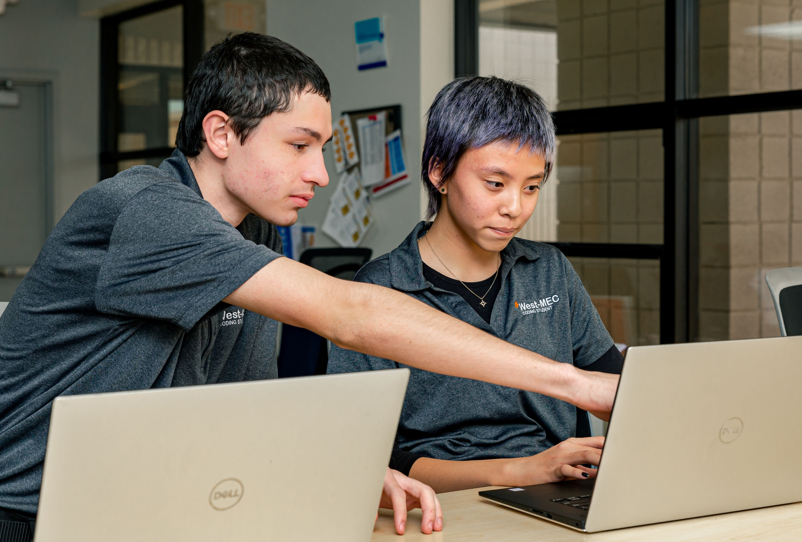
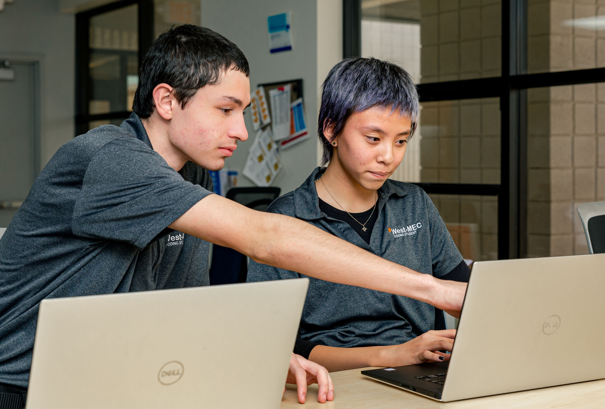

A Faster Way Foward A Faster Way Foward
A Faster Way Foward A Faster Way Foward The Coding Program is a 2-year program that focuses on teaching students on how to develop websites for people as a job.
Along this program students will also learn how to develop websites for mobile and other devices. The future pathways for coding are; Website Coders,
Graphic Designer, and many other jobs that are associated with technology.
 
